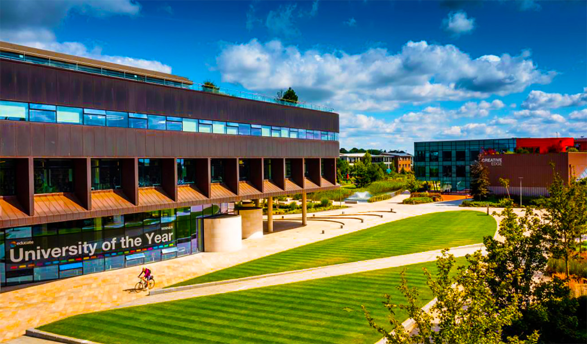

Edge Hill University is offering support to academics and students after being twinned with a Ukrainian institution. The University is one of 30 in the UK to have been matched with a Ukrainian institution as part of a twinning initiative coordinated by Cormack Consultancy Group with the support of Universities UK. As part of the scheme, Edge Hill has been twinned with the Yaroslav Mudryi National University of Law in Kharkiv. Conversations between universities have started this week with the aim of securing long-term collaboration across areas including curriculum content, online resources, research collaboration and the movement of students and staff.
Professor George Talbot, Pro Vice-Chancellor with responsibility for Research, said: “Edge Hill University is very pleased to have been twinned with the Yaroslav Mudryi National University of Law through this scheme. We had already been in talks since last October as we have shared research interests in relation to international cyber-space regulation and policy. “The recent invasion has added urgency to the arrangement, and we are now redoubling our efforts to support students and colleagues there more widely, as best we can.”
Initiatives being considered by the 30 universities who have signed up to the scheme include enabling access to IT infrastructure and accommodation, providing access to libraries and online academic resources, and giving Ukrainian students who can speak English the opportunity to take online UK university modules. Work is also underway to protect Ukrainian resources including rare book collections, while the possibility of hosting summer schools at UK campuses is also being explored.
Charles Cormack, Founder and Chairman of Cormack Consultancy Group, said: “This project is designed to support Ukrainian universities to continue to function during this difficult time. By supporting them in their mission we are also minimising the risk of brain drain, with academics and students disappearing into the HE systems of other countries. “It also allows UK universities to focus their support on a particular partner, which allows them to see they are making a real difference to the lives of academics and students and helping to sustain their partner.”
Professor Dame Janet Beer, Vice-Chancellor of the University of Liverpool and Chair of UUK’s International Policy Network, added: “UK universities have unequivocally condemned the war on Ukraine and we are committed to supporting Ukrainian staff and students currently in the UK as well as those who arrive here fleeing the conflict. “Our universities have a wealth of resources, knowledge and expertise, and we want to find practical ways to support Ukrainian universities now and in the future. That starts with understanding their current needs, and this twinning initiative is an excellent way for UK universities to support Ukrainian universities directly, in partnership alongside our higher education counterparts around the world.”